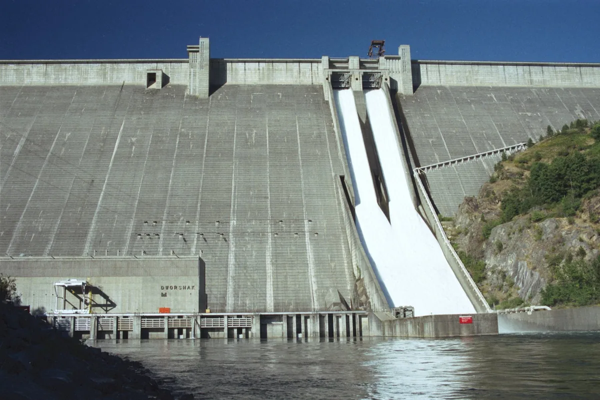

Timber and the river
In the log-drive photograph, the workers stand in the water with poles. That physical work supplies the idea for Caribel. Guests can follow a log all the way to lumber and eat at a cookhouse drawn from the river drives.
Water and power
Dworshak Dam is one regional example of water put to work. Rimrock takes the question indoors: what would it look like to see the gates, channels, and pumps that keep a whole hall of water moving?
Built in layers
The intended architecture starts with the bones of a 1920s and 1930s working town: heavy timber, steel sash, brick, and real stone. Later equipment belongs alongside older structures, as it would in a mill or rail yard that kept working.

From the design for Project Rimrock, a proposed Idaho destination.
Return to the park guide